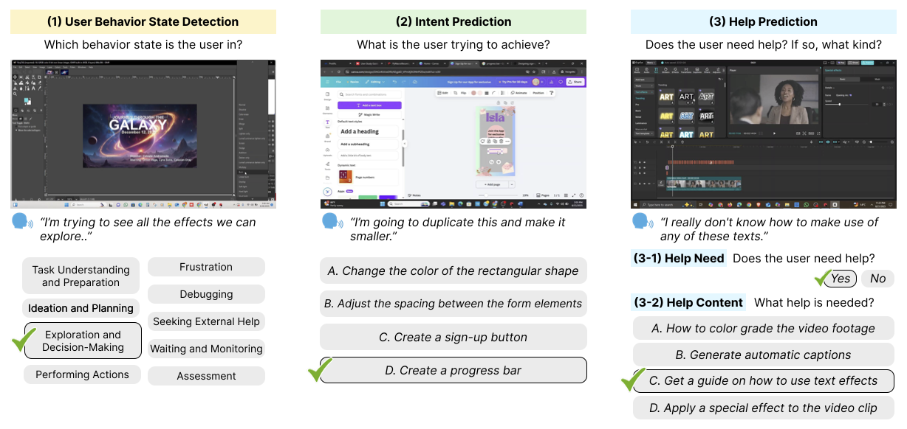
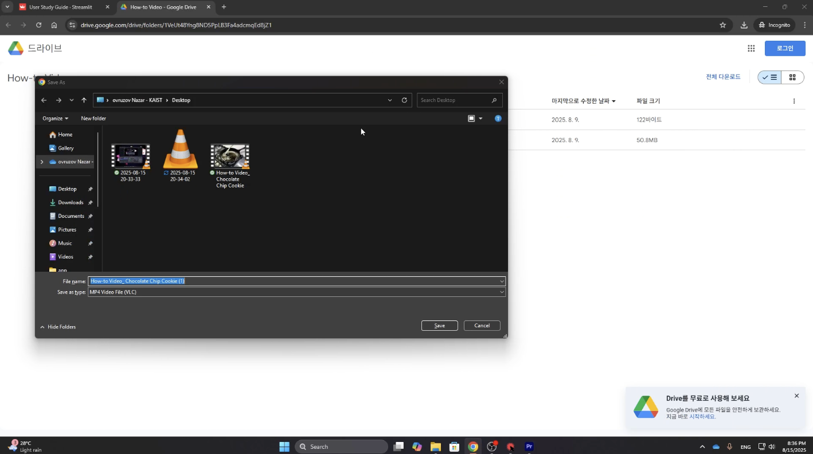
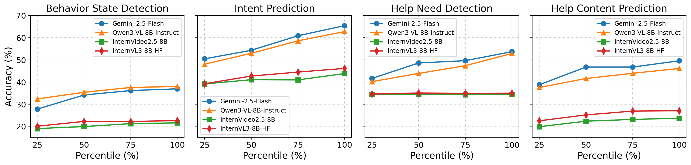

Graphical User Interface (GUI) agents have the potential to assist users in interacting with complex software (e.g., PowerPoint, Photoshop). While prior research has primarily focused on automating user actions through clicks and keystrokes, this paradigm overlooks human intention, where users value the ability to explore, iterate, and refine their ideas while maintaining agency. To move beyond automation and toward collaboration, GUI agents must understand what users are doing and why.
We introduce GUIDE (GUI User Intent Detection Evaluation), a benchmark that evaluates AI models on their ability to perceive user behavior, infer intent, and provide assistance in open-ended GUI tasks. GUIDE consists of 67.5 hours of screen recordings from 120 novice user demonstrations with think-aloud narrations, across 10 software. GUIDE defines three tasks—(i) Behavior State Detection, (ii) Intent Prediction, and (iii) Help Prediction that test a model's ability to recognize behavior state, reason about goals, and decide when and how to help. Evaluations across eight state-of-the-art multimodal models reveal that all models struggled, achieving only 44.6% and 55.0% accuracy on behavior state and help prediction. However, providing user context significantly improved the performance, raising help prediction by up to 50.2pp, highlighting the critical role of structured user understanding in effective assistance.
GUIDE collects screen recordings from 54 novice users across 10 widely used applications spanning five categories: Photo Editing (Photoshop, GIMP), Graphic Design (Figma, Canva), Presentation Design (PowerPoint, Google Slides), Video Editing (Premiere Pro, CapCut), and Data Analysis (Google Sheets, Microsoft Excel). Each session captures both screen recordings and think-aloud narrations to surface users' underlying intentions and cognitive states.
Below are sample screen recording clips from the GUIDE dataset, illustrating users performing open-ended tasks across different applications.
GUIDE defines a unified three-stage evaluation framework — Understanding → Reasoning → Assisting — progressing from interpreting user behavior to inferring intentions and ultimately providing helpful assistance.
Classify a video segment into one of nine behavior states spanning four high-level phases: Planning, Execution, Problem-Solving, and Evaluation — directly from visual cues alone. 1,800 annotated instances.
Infer the user's immediate, short-term goal from a video segment. Evaluated as a multiple-choice question with three plausible distractors. 1,300 instances.
Determine (1) whether the user needs help, and (2) what type of help is most appropriate. Bridges perception and actionable support. 1,000 instances (66% help-needed).

| Planning | Execution | Problem-Solving | Evaluation |
|---|---|---|---|
|
Task Understanding and Preparation Focused on logistics, interpreting tasks, gathering assets, and configuring environment. |
Exploration and Decision-Making Experimenting with options to understand effects and decide which to use. |
Frustration Encountering blockers, showing signs of being stuck, confused, or annoyed. |
Waiting and Monitoring Passive state, waiting for system-controlled processes to complete. |
|
Ideation and Planning High-level conceptual work, brainstorming ideas, and outlining structure. |
Performing Actions Confidently using software with purposeful actions executed with little hesitation. |
Debugging Actively investigating problem causes, forming and testing hypotheses. |
Assessment Intentionally pausing to review and evaluate work quality and accuracy. |
|
Seeking External Help Recognizing knowledge gaps and turning to external resources for guidance. |
Figure 3. Our proposed taxonomy of user behavior states in GUI-based software tasks, organized into four main phases: Planning, Execution, Problem-Solving, and Evaluation.
Annotated examples from the GUIDE dataset illustrating each of the three benchmark tasks.

We evaluate eight state-of-the-art multimodal LLMs in a zero-shot setting. All models struggled with Behavior State Detection and Help Prediction (peaks of 44.6% and 55.0% accuracy), but performance improved substantially when structured user context (behavior state and intent) was provided — boosting help prediction by up to 50.2 percentage points.
| Model | Behavior Detection | Intent Prediction | Help Need Detection (Acc) | Help Content Prediction (Acc) | ||||||
|---|---|---|---|---|---|---|---|---|---|---|
| – | +Prev. | – | +Behavior | – | +Behv. | +Behv.+Intent | – | +Behv. | +Behv.+Intent | |
| Gemini-2.5-Flash | 36.91 | 38.19 | 65.40 | 66.77 | 53.64 | 76.33 | 78.07 | 49.53 | 53.75 | 78.59 |
| Gemini-2.5-Pro | 42.44 | 43.79 | 67.80 | 70.16 | 69.82 | 84.73 | 82.38 | 52.74 | 57.03 | 79.69 |
| GPT-4o-mini | 17.65 | 17.07 | 60.76 | 62.19 | 46.05 | 78.92 | 82.26 | 31.32 | 42.86 | 79.84 |
| GPT-4o | 36.32 | 37.24 | 61.19 | 62.58 | 49.69 | 87.79 | 87.91 | 45.95 | 48.37 | 79.78 |
| Claude-4.5-Sonnet | 44.61 | 45.63 | 71.39 | 72.62 | 39.49 | 58.56 | 59.43 | 55.00 | 62.17 | 82.79 |
| Qwen3-VL-8B | 37.97 | 38.13 | 62.70 | 64.03 | 52.83 | 70.39 | 77.36 | 46.06 | 50.63 | 80.11 |
| InternVideo2.5-8B | 21.57 | 27.02 | 43.79 | 45.13 | 34.36 | 35.35 | 35.25 | 23.67 | 29.15 | 73.86 |
| InternVL3-8B | 22.57 | 24.90 | 46.11 | 46.97 | 34.94 | 43.73 | 46.82 | 27.03 | 32.20 | 72.97 |
Table: Accuracy across all tasks and conditions. Bold = best in column. Context augmentation (+Behavior, +Intent) consistently improves performance, especially for help-related predictions.
